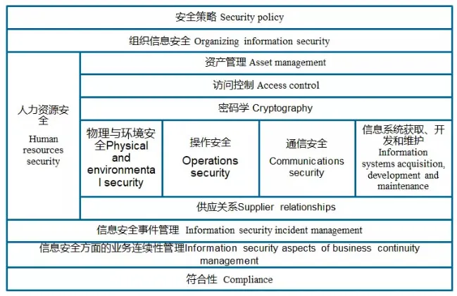

信息安全管理体系建设
信息安全管理体系 (ISMS) 是一种通过实施组织内政策、过程、技术和人员来保护信息安全的系统。ISMS 的作用是识别和评估信息安全风险，并采取措施来管理和控制这些风险。
信息安全管理体系价值
●遵循法规和法律要求，如数据保护和隐私法规。
●保护敏感数据，防止信息泄露、篡改或遗失。
●提高客户和合作伙伴的信任，提高企业声誉和形象。
●防范和减少网络安全威胁对组织造成的损害。
信息安全管理体系建设
1前期评估：对企业的信息安全现状进行评估，了解信息安全需求和风险情况。
2制定信息安全政策：制定信息安全政策，确定信息安全目标和责任。
3设计信息安全体系：根据评估结果和政策，设计信息安全管理体系的组织结构和流程。
4建设信息安全体系：实施信息安全管理体系的建设计划，完善信息安全管理制度。
5检测评估：对信息安全管理体系进行评估和检测，确保信息安全管理体系的有效性。
6完善改进：根据评估结果，不断完善信息安全管理体系。
7维护管理：维护信息安全管理体系，确保信息安全管理体系的长期可持续运行。
信息安全管理体系控制域

1信息安全方针：设立关于信息安全的政策和责任，以确保组织的目标和所有人的利益得到充分的保护。
2信息安全组织：确定并组织负责实施信息安全的管理层、员工以及其他相关人员。
3人力资源安全：要求在雇用、培训、开展业务活动和离职时保护员工、其他人员和组织的信息安全。
4资产管理：确定、识别、评估、监督和保护组织资产，以确保它们的完整性、可靠性、机密性和可用性。
5访问控制：确定访问权限规则，以限制对信息系统和数据的不合法访问。
6加密技术：使用加密技术来保护信息的机密性和完整性。
7物理和环境安全：使用物理和环境安全措施，以防止对信息系统和数据的未经授权的访问、损坏和更改。
8操作安全：确保组织的信息系统的日常操作，在安全的环境中运行。
9通信安全：保护传递的信息，安全传输到目的地。
10系统的获取和开发维护：对信息系统的获取、开发、安装和维护，确保其安全和符合标准。
11供应商关系：与其他公司的关系，确保信息安全不受其他公司的行为影响。
12信息安全事件管理：如何发现、报告、处理和预防信息安全事件。
13业务连续性管理：准备和应对灾难和其他不利影响，以确保业务可以继续运营。
14符合性：确保信息安全符合遵守了相关的法律、法规和标准要求。
信息安全管理体系 PDCA 过程
PDCA 是一种实现组织的连续改进循环过程，使组织可以不断地提高效率和质量。PDCA 由以下四个阶段组成：
计划 (Plan):
●制定目标，确定执行计划。规划(建立ISMS):建立与管理风险和改进信息安全有关的ISMS 方针、目标过程和规程，以提供与组织总方针和总目标相一致的结果。
○P1 定义ISMS范围和边界。
○P2 制定ISMS 方针。
○P3 确定风险评估方法。
○P4 实施风险评估。
○P5 选择、评价和确定风险处理方式、处理目标和处理措施。
○P6 获得管理者对建议的残余风险的批准。
○P7 获得管理者对实施和运行ISMS 的授权。
○P8 编制适用性声明 (SoA)。
执行 (Do)
●实施计划，并且进行必要的变更。实施(实施和运行ISMS): 实施和运行ISMS 方针、控制措施、过程和规程。
○D1 制订风险处理计划。
○D2 实施风险处理计划。
○D3 开发有效性测量程序。
○D4 实施培训和意识教育计划。
○D5 管理ISMS 的运行。
○D6 管理ISMS 的资源。
○D7 执行检测和响应事件的程序。
检查 (Check)
●评估计划的执行情况，评估结果。检查(监视和评审 ISMS): 对照ISMS 方针、目标和实践经验，评估并在适当时测量过程的执行情况，并将结果报告管理者以供评审。
○C1 日常监视和检查。
○C2 进行有效性测量
○C3 实施内部审核。
○C4 实施风险再评估。
○C5 实施管理评审。
改进 (Act)
●根据结果，进行相应的改进，并确定未来计划。(4)处置(保持和改进ISMS):基于ISMS 内部审核和管理评审的结果或其他相关信息，采取纠正和预防措施，以持续改进 ISMS。
○A1 实施纠正和预防措施。
○A2 沟通措施和改进情况。